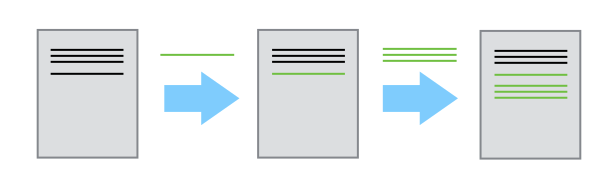
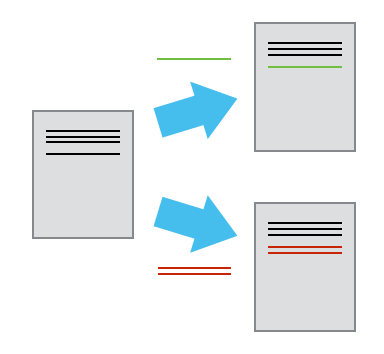
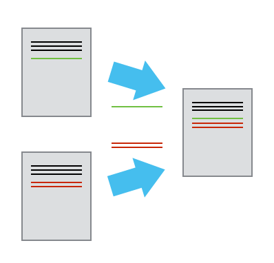
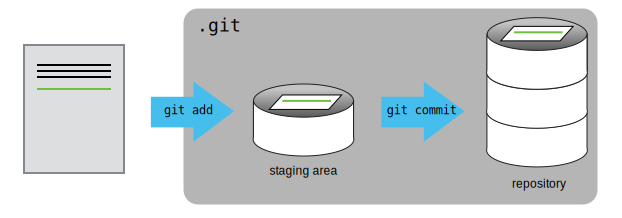
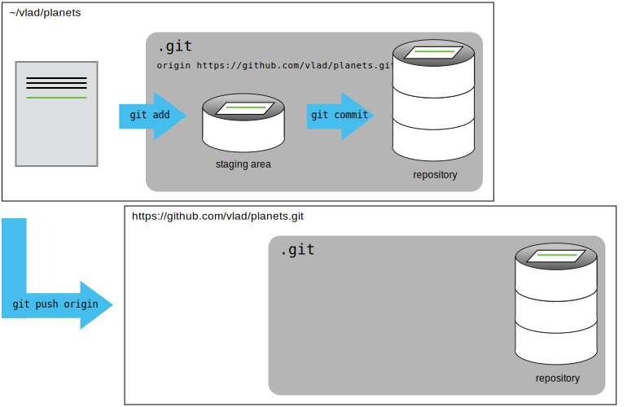

Proyectos
Luciano Selzer
02 June, 2018
Manejo de Proyectos con RStudio
Introducción
Managing your projects in a reproducible fashion doesn’t just make your science reproducible, it makes your life easier –Vince Buffalo (@vsbuffalo)
La mayoría de la gente organiza sus proyectos así:

Hay muchas razones por las cuales SIEMPRE deberían evitar esto:
- Es muy dificil cual es la versión original de tus datos y cual es la modificada;
- Se vuelve un lío porque mezcla archivos de varias extensiones juntos;
- Probablemente te tomará mucho tiempo encontrar el archivo que realmente buscas, y ver cuales son las figuras correctas y cual es el código que las genera
Un buen diseño de proyecto va a ser tu vida más fácil:
- Te va a ayudar a mantener la integridad de tus datos;
- Va a ser que sea más sencillo compartir tu código con alguien más (Un compañero de laboratorio, colaborador, o supervisor);
- Te permite subir fácilmente código con tu propuesta de manuscrito;
- Hace que sea más fácil volver a un proyecto luego de dejarlo por un tiempo.
Una posible solución
Afortunadamente, hay herramientas y paquetes que pueden ayudarte a manejar el trabajo de forma efectiva.
Una de los aspectos más poderosos y útiles de RStudio es el manejo de proyectos. Hoy vamos a usarlo para crear un proyecto auto-contenido y reproducible.
Desafio: Crear un proyecto autocontenido
Vamos a crear un proyecto auto-contenido en RStudio:
- Hacer clic en “File” en el menú, y luego en “New Project”
- Click en “New Directory”1
- Click en “Empty Project”
- Escribir el nombre de la carpeta donde se guardará el proyecto, e.g. “mi_proyecto”
- Asegurarse de que la casilla “Create a git repository” esté seleccionada.
- Click en el botón “Create Project”
Buenas prácticas para manejo de proyectos
Aunque no hay una manera que sea la “mejor” para diseñar un proyecto, si hay alguno lineamientos principales a seguir que harán el manejo de proyecto más sencillo:
- Tratar los datos como solo lectura
- Limpieza de datos
- Trata la salida generada como descartable
Tip: Prácticas suficientemente buenas para la computación científica
Good Enough Practices for Scientific Computing da las siguientes recomendaciones para la organización de proyectos:
- Poner cada proyecto en su propia carpeta.
- Poner los documentos de texto en carpeta
doc. - Poner los datos “crudos” en una carpeta
data - Poner los datos limpios en una
results. - Poner el código de fuente del proyecto en
scry programas externos o compilados enbin. - Nombrar todos los archivos de forma que refleje su contenido o función.
Tip: ProjectTemplate - una posible solución
Una forma de automatizar el manejo de proyectos es instalar un paquete de terceros, ProjectTemplate. Este paquete va a configurar una estructura ideal para el manejo del proyecto.
Separa la definición de la función de su aplicación
Es buena idea separar estas funciones en un carpeta distinta; + una carpeta para las funciones útiles que vas a reusar entre análisis y proyectos + otra para guardar los scripts de análisis. + Evitar la duplicación
Guarda los datos en la carpeta data
Descarga los datos de gapminder de aquí.
- Descarga el archivo (CTRL + S, click botón derecho -> “Guardar como”, o Archivo -> “Guardar página como”)
- Asegúrate que el archivo guardado tiene el nombre
gapminder-FiveYearData.csv. - Guarda el archivo en la carpeta
data/dentro de tu proyecto.
Más tarde vamos a cargar e inspeccionar estos datos.
Control de Versión
Control de Versión en RStudio
También hemos configurado nuestro proyecto para que se integre con git, poniendolo bajo control de versión. RStudio tiene una buena interfaz a git que la consola, pero es muy limitada por lo que a veces será necesario usar la consola. Vamos a hacer confirmación (commit) inicial de nuestros archivos.
El panel de “Environment/History”" también tiene el panel de “Git”.
Tip: versionando salida descartable
En general no querés versionar las salidas descartable (o los datos de solo lectura). Hay que modificar el archivo .gitignore para decirle que ignore estos archivos y carpetas.
Ejercicio 2
- Crea una carpeta dentro del proyecto llamada
graphs. - Modifica el archivo
.gitignorepara que contengagraphspara que estas salidas descartables no sean versionadas.
Breve Introducción a Git

Git es un sistema de control de versión

Cada vez que confimamos un archivo a git este le saca una “instatanea”
Colaborando

Fusionando

Tracked vs Untracked
Los archivos pueden tener dos estados básicos:
- Untracked (sin seguimiento)
Tracked (con seguimiento)
git addgit comit

Repositorios Remotos
Permite que otros colaboradores tengan copias de nuestro trabajo.
También sirve de backup.
Con esto estamos diciendo a git que añada un servidor remoto llamado origin y a continuación le damos la URL.
Subiendo los cambios
El comando git push nos permite subir los cambios al servidor.
